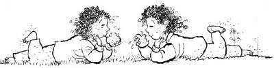

15 Ağustos 1928
Müzeyyen Babaanne,
— Nasıl geçti orada günleriniz?
— Çok güzeldi babaanneciğim, Bengül Teyze çok sevindi bizi gördüğüne ve çok ilgilendi bizimle.
— Bir helvalar, bir pastalar yapmış, Müzeyyen Nine! Şahane vallahi, parmağını yersin, dedi Zafer elindeki salçalı ekmeği ısırırken.
— Zafer Abi, babaannem parmağını yiyorsa sen artık ayak parmaklarını bile yemişsindir, dedi Sanem.
Başta ikizler olmak üzere hepsi kıkırdadı.
— Kendi ayak parmaklarımdan önce şu sizin badem parmaklarınızı yerim ben, diyerek kıkırdayan ikizleri gücünün yettiğince kovaladı Zafer.
O sırada bahçe kapısından çocuk sesleri ve İbnülcemal Ahmet Tevfik Efendi’nin kibar beyefendi sesi duyuldu:
— Bre melunlar! Hiç velosipete binen delikanlı görmediniz mi?
— Kırk sekiz yaşına geldi, bak kerataya, kendine delikanlı diyor hâlâ, diye güldü Müzeyyen Babaanne ve devam etti:
— Ama gönlü genç ne de olsa.
Soluk soluğa içeri girdi Ahmet Tevfik,
— Merhaba gençler!
— Merhaba Tevfik Amca!
İkizler koşarak iki bacağına sarıldı, o da onlara cebinden çıkardığı, özenle sarılmış paketi açarak akide şekerlerini verdi.
— Demirhindi[20] şerbeti içer misin Tevfik evladım?
— İçmez miyim Müzeyyen Anne, hele sizin o mübarek ellerinizden içilmez mi... Buyurun çiçeğinizi.
— Eh be Tevfik oğlum, beş yaşındayken de komşu bahçelerden yolar getirirdin çiçekleri; hiç değişmedin.
— Sağ olun efendim.
Zafer kimseye bırakmadan bir solukta anlattı Eskihisar gezisini. Yalnız Nisan ve Erim “Aynı geziye mi gittik?” diye birbirlerine baktılar bir ara, çünkü yenilen içilenler şifreden, “Kaplumbağalar ve Adam” tablosundan daha çok yer tutmuştu. Bir ara zerde tatlısının laf olarak Osman Hamdi’den daha çok geçtiğini fark ettiler. Erim güldü,
— Bönbön, bir şey söyleyeceğim kızmak yok!
— Söyle Canci, dedi ekmeğin son parçasını ağzına atarken Zafer.
— Ayının kırk muhabbeti varmış otuz dokuzu armut üstüneymiş.
Kıkır kıkır güldüler.
— Ne derseniz deyin, enfesti azizim yemekler.
— Velhasılıkelam,[21] Ahmet Tevfik Amca, Bursa’ya gideceğiz, dedi Nisan.
— Nasıl olacak o iş?
— Biz de onu planlıyoruz. Siz yıllar önce gitmemiş miydiniz?
— Evet, 1899 yılında, on dokuz yaşında civan gibiydim, velosipetle bir gezi yapmıştım. Büyük maceraydı o zamanın şartlarında. Neredeyse otuz yıl olmuş. Peh peh...
Hayıflanarak demirhindi şerbetinden koca bir yudum aldı.
— Yine çıksak ya öyle bir seyahate.
Ahmet Tevfik Efendi “pııhh” diye püskürttü ağzındaki şerbeti. Tam karşısında oturan Zafer’in yüzü hortumla yıkanmış gibi ıslandı. (Bu arada şerbetin kahverengi olduğunu belirtmeliyim.) Herkes kahkaha attı.
Sanem, “Bizim casus Arap’a benzedin Zafer Abi” deyince herkes daha çok güldü. Bir Zafer bir de Ahmet Tevfik gülmüyordu. “Mirim, özür dilerim” diyerek mendilini çıkarıp yüzünü silmeye kalkınca bu sefer mendilin içinde unuttuğu akide şekeri parçaları yüzüne yapıştı Zafer’in. Suratının her tarafı küçük parıl parıl parlayan akide şekeri tozuyla kaplandı. (Şimdi şöyle bir şey düşünün: Yüzü tamamen kahverengi olmuş, öte yandan yaldızlarla dolu bir gece elbisesi gibi ışıl ışıl.)
— Şimdi de Erim Abi’min anlattığı önce zifte sonra tavuk tüyüne bulanmış kumarbazlar gibi oldun Zafer Abi, dedi Simin.
Ahmet Tevfik mahcubiyet içinde diğer cebinden başka bir mendil çıkarırken Zafer donuk bir şeklide:
— Tevfik Amca, gerisine sen zahmet etmesen. Gittikçe daha kirleniyorum, deyince bu sefer İbnülcemal Ahmet Tevfik Efendi de kahkahayı bastı.
— Kusura bakmayın çocuklar. Bir an çok şaşırdım, yalnız niye olmasın? Yaparız bu yolculuğu alimallah!
Nisan,
— At arabası da olabilir, ne dersiniz?
— Yoo, velosipetin heyecanını, şevkini vermez. Ben de yedek bir velosipet var. Kurduğumuz cemiyetteki arkadaşlardan da alırım iki tane ödünç, onlar da bu işe gönül verecek gençleri kazanmak isteyeceklerdir. Aslında otuz yıl önceki velosipeti babacığınız Erdoğan’a vermiştim, ne bindi ne de bir daha gördüm o velosipeti.
— Ben de bir kere gördüm yavrum. Bir kere onunla çıktı, bir daha da getirmedi eve. Sordum, anlatmadı da kerata, dedi Müzeyyen Babaanne.
— Eğer müsaade ederseniz, ben bu gençlerle Bursa’ya yeni bir cevelan yapmak isterim güzel validem.
— Oğlum, onlar oraya nasılsa gidecekler; hususi vazifeleri var. Sizin yanlarında olmanız beni çok rahatlatır, memnun olurum.
— Sağ olun validem.
Zafer,
— Ben zorlanabilirim belki velosipetle. Hem size orada ayak bağı olurum, kullanamam ben o cihazı bu durumumla.
Erim ayağa kalktı.
— Herkesten iyi kullanırsın Bönbön.
Tevfik Amca da ayağa kalktı.
— Özel bir mekanizma yaptırırız, herkesten iyi kullanırsın. Evde kalmaz senin gibi bir canavar.
— Tamam, gelirim engel olmazsam size, dedi Zafer.
Nisan,
— Unut “engel” kelimesini Zafer, diyerek ona sarıldı.
İkizler önlerine baktı. Simin,
— İki tane de üç tekerlekli velosipet ayarlayabilir misin Tevfik Amca?
— Gençler, o, daha sonra... Büyüyün biraz, sizi İzmir’e götürürüm, söz efendim.
Sonraki dört gün, köşkün bahçesinde bisiklet kursuyla geçti. Önce teorik dersler, sonra da pratik. En çok üç kişi eğlendi: Sanem, Simin ve Saka. Özellikle Zafer’in deneme sırası geldiğinde Simin aşağıdan bağırıyordu:
— Sanem koş! Sıra Zafer Abi’ye geliyor.
— Yetiştim. Aman başlamasın, durun geliyorum!

Belki abartı olacak ama hani şu gündüzleri uyuyup geceleri yaşayan erguvan ağacağının üstündeki puhu kuşu var ya, o da gündüzleri bu eğlenceyi izlemeye başlamıştı. Artık geceleri uyuyor, gündüz, panayıra dönen bahçe etkinliklerini seyrediyordu. Zafer velosipeti yanlışlıkla Ahmet Tevfik Amca’sının üstüne sürdüğünde, o da kaçmak için çalıların içine atladığında sakayla puhu birbirlerine kanatlarıyla olanları işaret edip kahkahalar atıyorlardı.
Sonuçta dört genç –müsaade ederseniz yolculuk boyunca Ahmet Tevfik’e de böyle hitap edeceğim– hazırlıklarını tamamladılar. Yanlarına az miktarda kumanya ve su aldılar.
Gece, şu an beni olduğu gibi dördünü de pek uyku tutmadı. Önlerinde çok önemli bir macera vardı. 1928 yılının sıcak mı sıcak bir günü, çok uzun bir yola gideceklerdi. Şifreyi yanlış çözmüşlerse boşuna bayağı bir yol yapmış olacaklardı.
Müzeyyen Babaanne; gri beyaz saçı bembeyaz dantellerle işli tertemiz yastığın üzerinde, şu son geçirdiği günleri düşündü. Hediye kitabın açılmasıyla birlikte Erdoğan eve dönmüş gibiydi. Eve müthiş bir neşe gelmişti. Bunda, Erim’in kendisine verilen görevle birlikte yıllardır adını koyamadığı o mahzunluğu atmış olmasının da büyük etkisi vardı. Ne zamandır ilk defa Erimciğin gözlerinin içinin güldüğünü görüyordu. “İnşallah muvaffakiyetle dönerler” dedi. Yastığının altından oğlunun ve gelininin mendillerini çıkardı, kokladı. Kitabın hayatlarına girdiği günden beri geceleri artık ağlamadığını fark etti yaşlı kadın ve yüzünde koca bir gülümsemeyle uyudu.